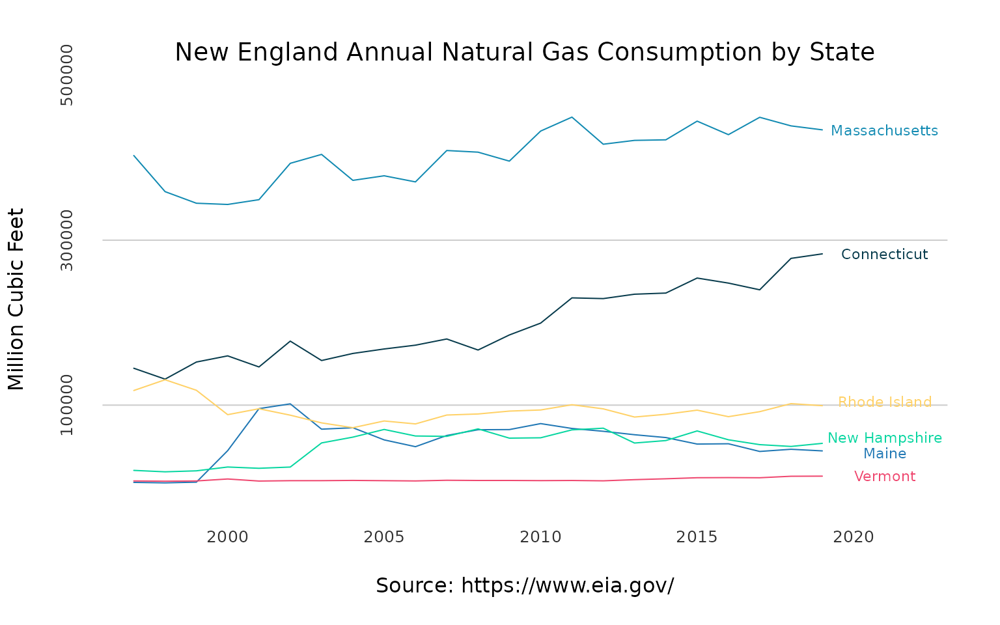

The USgas package provides an overview of demand for natural gas in the US in a time-series format. That includes the following datasets:
-
us_total- The US annual natural gas consumption by state-level between 1997 and 2019, and aggregate level between 1949 and 2019 -
us_monthly- The monthly demand for natural gas in the US between 2001 and 2020 -
us_residential- The US monthly natural gas residential consumption by state and aggregate level between 1989 and 2020
Data source: The US Energy Information Administration API
us_total
The us_total provides an annual overview on the US total demand for natural gas by state and aggregated level. The dataset includes the following fields:
-
year- An integer, the year of the observation -
state- A character, the US state (or aggregate level) indicator -
y- A numeric, the corresponding yearly total natural gas consumption in a million cubic feet by state/US
data("us_total") head(us_total) #> year state y #> 1 1997 Alabama 324158 #> 2 1998 Alabama 329134 #> 3 1999 Alabama 337270 #> 4 2000 Alabama 353614 #> 5 2001 Alabama 332693 #> 6 2002 Alabama 379343
The dataset includes the state level and the US aggregate level (labeled under U.S.):
unique(us_total$state) #> [1] "Alabama" "Alaska" #> [3] "Arizona" "Arkansas" #> [5] "California" "Colorado" #> [7] "Connecticut" "Delaware" #> [9] "District of Columbia" "Federal Offshore -- Gulf of Mexico" #> [11] "Florida" "Georgia" #> [13] "Hawaii" "Idaho" #> [15] "Illinois" "Indiana" #> [17] "Iowa" "Kansas" #> [19] "Kentucky" "Louisiana" #> [21] "Maine" "Maryland" #> [23] "Massachusetts" "Michigan" #> [25] "Minnesota" "Mississippi" #> [27] "Missouri" "Montana" #> [29] "Nebraska" "Nevada" #> [31] "New Hampshire" "New Jersey" #> [33] "New Mexico" "New York" #> [35] "North Carolina" "North Dakota" #> [37] "Ohio" "Oklahoma" #> [39] "Oregon" "Pennsylvania" #> [41] "Rhode Island" "South Carolina" #> [43] "South Dakota" "Tennessee" #> [45] "Texas" "U.S." #> [47] "Utah" "Vermont" #> [49] "Virginia" "Washington" #> [51] "West Virginia" "Wisconsin" #> [53] "Wyoming"
In the example below, we will subset the US aggregate level view:
us_agg <- us_total[which(us_total$state == "U.S."),] us_agg <- us_agg[order(us_agg$year), ] head(us_agg) #> year state y #> 1034 1949 U.S. 4971152 #> 1035 1950 U.S. 5766542 #> 1036 1951 U.S. 6810162 #> 1037 1952 U.S. 7294320 #> 1038 1953 U.S. 7639270 #> 1039 1954 U.S. 8048504
We can plot it with the plot function. We will add some customiztion to the plot:
at_x <- seq(from = 1950, to = 2020, by = 10) at_y <- pretty(us_agg$y)[c(3, 5, 7)] plot(us_agg$year, us_agg$y, col = "#1f77b4", type = "l", frame.plot = FALSE, axes = FALSE, panel.first = abline(h = at_y, col = "grey80"), main = "US Total Natural Gas Consumption", xlab = "Source: https://www.eia.gov/", ylab = "Million Cubic Feet") mtext(side =1, text = format(at_x, digits=0, nsmall=0), at = at_x, col = "grey20", line = 1, cex = 0.8) mtext(side =2, text = format(at_y, scientific = FALSE), at = at_y, col = "grey20", line = 1, cex = 0.8)

Similarly, we can subset a couple of states and visualize them. For example, let’s visualize the annual consumption in New England states. We will start by subsetting the corresponding states in New England, transform the data.frame to wide format, and reorder by date:
ne <- c("Connecticut", "Maine", "Massachusetts", "New Hampshire", "Rhode Island", "Vermont") ne_gas <- us_total[which(us_total$state %in% ne),] ne_wide <- reshape(ne_gas, v.names = "y", idvar = "year", timevar = "state", direction = "wide") ne_wide <- ne_wide[order(ne_wide$year), ] names(ne_wide) <- c("year",ne)
Set the y and x axis ticks:
Use the plot to plot the states natural gas consumption:
# plot the first series plot(ne_wide$year, ne_wide$Connecticut, type = "l", col = "#073b4c", frame.plot = FALSE, axes = FALSE, panel.first = abline(h = c(at_y), col = "grey80"), main = "New England Annual Natural Gas Consumption by State", cex.main = 1.2, font.main = 1, col.main = "black", xlab = "Source: https://www.eia.gov/", font.axis = 1, cex.lab= 1, ylab = "Million Cubic Feet", ylim = c(min(ne_gas$y, na.rm = TRUE), max(ne_gas$y, na.rm = TRUE)), xlim = c(min(ne_gas$year), max(ne_gas$year) + 3)) # Add the 5 other series lines(ne_wide$year, ne_wide$Maine, col = "#1f77b4") lines(ne_wide$year, ne_wide$Massachusetts, col = "#118ab2") lines(ne_wide$year, ne_wide$`New Hampshire`, col = "#06d6a0") lines(ne_wide$year, ne_wide$`Rhode Island`, col = "#ffd166") lines(ne_wide$year, ne_wide$Vermont, col = "#ef476f") # Add the y and x axis ticks mtext(side =1, text = format(at_x, digits=0, nsmall=0), at = at_x, col = "grey20", line = 1, cex = 0.8) mtext(side =2, text = format(at_y, scientific = FALSE), at = at_y, col = "grey20", line = 1, cex = 0.8) # Add text text(max(ne_wide$year) + 2, tail(ne_wide$Connecticut,1), "Connecticut", col = "#073b4c", cex = 0.7) text(max(ne_wide$year) + 2, tail(ne_wide$Maine,1) * 0.95, "Maine", col = "#1f77b4", cex = 0.7) text(max(ne_wide$year) + 2, tail(ne_wide$Massachusetts,1), "Massachusetts", col = "#118ab2", cex = 0.7) text(max(ne_wide$year) + 2, tail(ne_wide$`New Hampshire`,1) * 1.1, "New Hampshire", col = "#06d6a0", cex = 0.7) text(max(ne_wide$year) + 2, tail(ne_wide$`Rhode Island`,1) * 1.05, "Rhode Island", col = "#ffd166", cex = 0.7) text(max(ne_wide$year) + 2, tail(ne_wide$Vermont,1), "Vermont", col = "#ef476f", cex = 0.7)

us_monthly
The us_monthly dataset provides a monthly time series, representing the demand for natural gas in the US between 2001 and 2020:
data("us_monthly") head(us_monthly) #> date y #> 1 2001-01-01 2676998 #> 2 2001-02-01 2309464 #> 3 2001-03-01 2246633 #> 4 2001-04-01 1807170 #> 5 2001-05-01 1522382 #> 6 2001-06-01 1444378
We will use the plot function to visualize the series:
at_x <- seq.Date(from = as.Date("2000-01-01"), to = as.Date("2020-01-01"), by = "5 years") at_y <- pretty(us_monthly$y)[c(2, 4, 6)] plot(us_monthly$date, us_monthly$y, col = "#1f77b4", type = "l", frame.plot = FALSE, axes = FALSE, panel.first = abline(h = at_y, col = "grey80"), main = "US Total Natural Gas Consumption", xlab = "Source: https://www.eia.gov/", ylab = "Million Cubic Feet") mtext(side =1, text = format(at_x, format = "%Y"), at = at_x, col = "grey20", line = 1, cex = 0.8) mtext(side =2, text = format(at_y, scientific = FALSE), at = at_y, col = "grey20", line = 1, cex = 0.8)

us_residential
The us_residentail dataset provides a monthly overview on the residential consumption of natural gas in the US by state and aggregate levels:
data("us_residential") head(us_residential) #> date state y #> 1 1989-01-01 Alabama 7406 #> 2 1989-02-01 Alabama 7044 #> 3 1989-03-01 Alabama 7392 #> 4 1989-04-01 Alabama 4722 #> 5 1989-05-01 Alabama 2856 #> 6 1989-06-01 Alabama 1709
The dataset contains information about the residential consumption on all US states:
unique(us_residential$state) #> [1] "Alabama" "Alaska" "Arizona" #> [4] "Arkansas" "California" "Colorado" #> [7] "Connecticut" "Delaware" "District of Columbia" #> [10] "Florida" "Georgia" "Hawaii" #> [13] "Idaho" "Illinois" "Indiana" #> [16] "Iowa" "Kansas" "Kentucky" #> [19] "Louisiana" "Maine" "Maryland" #> [22] "Massachusetts" "Michigan" "Minnesota" #> [25] "Mississippi" "Missouri" "Montana" #> [28] "Nebraska" "Nevada" "New Hampshire" #> [31] "New Jersey" "New Mexico" "New York" #> [34] "North Carolina" "North Dakota" "Ohio" #> [37] "Oklahoma" "Oregon" "Pennsylvania" #> [40] "Rhode Island" "South Carolina" "South Dakota" #> [43] "Tennessee" "Texas" "U.S." #> [46] "Utah" "Vermont" "Virginia" #> [49] "Washington" "West Virginia" "Wisconsin" #> [52] "Wyoming"
Similarly, we can plot the monthly consumption on natural gas in the West Cost states:
wc_gas <- us_residential[which(us_residential$state %in% c("Alaska", "California", "Oregon", "Washington")),] # Reshape to wide wc_wide <- reshape(wc_gas, v.names = "y", idvar = "date", timevar = "state", direction = "wide") names(wc_wide) <- c("date","Alaska", "California", "Oregon", "Washington") # Reorder the data wc_wide <- wc_wide[order(wc_wide$date), ] # Set the plot y and x axis ticks at_x <- seq.Date(from = as.Date("1990-01-01"), to = as.Date("2020-01-01"), length.out = 4) at_y <- pretty(wc_gas$y)[c(2, 4, 6)] # plot the first series plot(wc_wide$date, wc_wide$Alaska, type = "l", frame.plot = FALSE, axes = FALSE, panel.first = abline(h = c(at_y), col = "grey80"), main = "West Cost Natural Gas Residential Consumption", cex.main = 1.2, font.main = 1, col.main = "black", xlab = "Source: https://www.eia.gov/", font.axis = 1, cex.lab= 1, ylab = "Million Cubic Feet", ylim = c(min(wc_gas$y, na.rm = TRUE), max(wc_gas$y, na.rm = TRUE))) # Add the 3 other series lines(wc_wide$date, wc_wide$California, col = "#1f77b4") lines(wc_wide$date, wc_wide$Oregon, col = "#457b9d") lines(wc_wide$date, wc_wide$Washington, col = "#ef476f") # Add the y and x axis ticks mtext(side =1, text = format(at_x, format = "%Y %b"), at = at_x, col = "grey20", line = 1, cex = 0.8) mtext(side =2, text = format(at_y, scientific = FALSE), at = at_y, col = "grey20", line = 1, cex = 0.8) text(tail(wc_wide$date, 10)[1], max(wc_gas$y, na.rm = TRUE), "California", col = "#1f77b4", cex = 0.6) text(tail(wc_wide$date, 10)[1], max(wc_gas$y, na.rm = TRUE) - 5000, "Washington", col = "#ef476f", cex = 0.6) text(tail(wc_wide$date, 10)[1], max(wc_gas$y, na.rm = TRUE) - 10000, "Oregon", col = "#457b9d", cex = 0.6) text(tail(wc_wide$date, 10)[1], max(wc_gas$y, na.rm = TRUE) - 15000, "Alaska", col = "black", cex = 0.6)